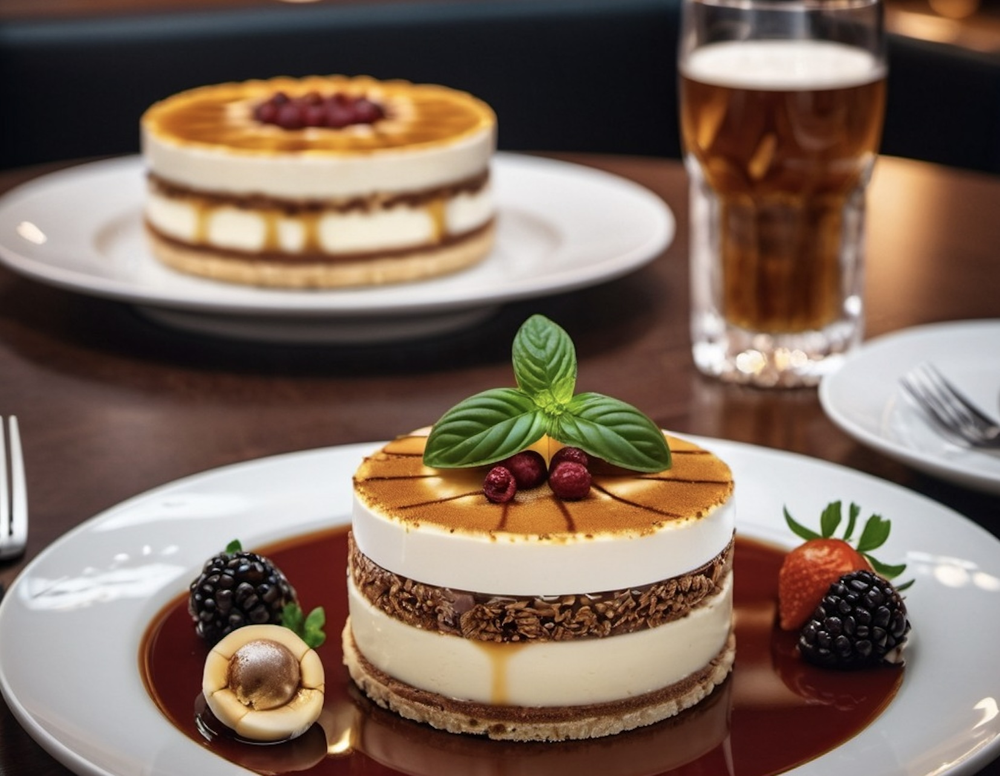

Antipasti - Planches à Partager
- Planch'Italienne: Jambon de Parme, salami, mortadelle, olives marinées, artichauts à l'huile, bruschette aux tomates et basilic, crostini à la tapenade d'olives.
- Planch'Classique: Œufs durs, tomates cerises, mozzarella di bufala, prosciutto, poivrons grillés, courgettes marinées, pain grillé frotté à l'ail.
- Planch'Méditerranéenne: Houmous, tzatziki, poivrons grillés, aubergines marinées, feta, olives noires et vertes, pain pita.
- Planch'Gourmande: Chorizo, manchego, figues fraîches, noix, miel, roquette, pain aux noix.
- Planch'Veggie: Carottes, céleri, radis, pois chiches rôtis, dip de betterave, fromage de chèvre, grissini.
- Planch'Luxueuse: Jambon ibérique, truffe noire, burrata crémeuse, pesto de basilic, champignons marinés, focaccia maison.
- Planch'Du Chef: Une sélection surprise d'antipasti selon l'inspiration du chef, toujours frais et savoureux.
Desserts à Partager
- Panna Cotta aux Fruits Rouges: Crème vanille, coulis de fruits rouges, fruits frais.
- Tiramisu Classique: Crème mascarpone, café, cacao, biscuits imbibés.
- Assiette de Fromages ItaliensSélection de fromages italiens, miel, noix, fruits secs.
